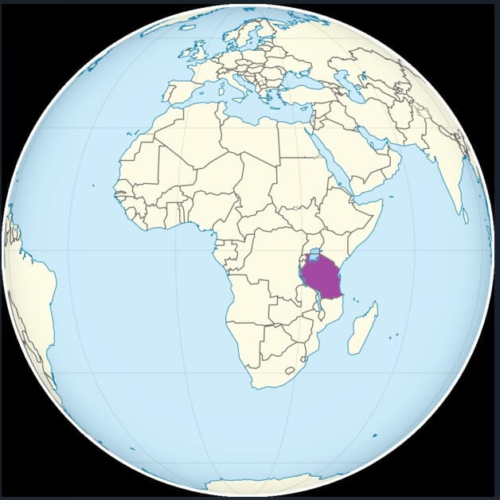
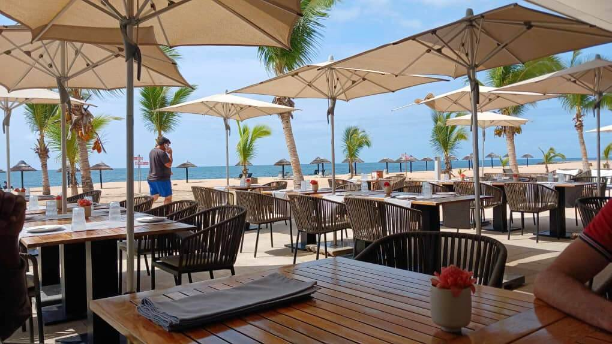
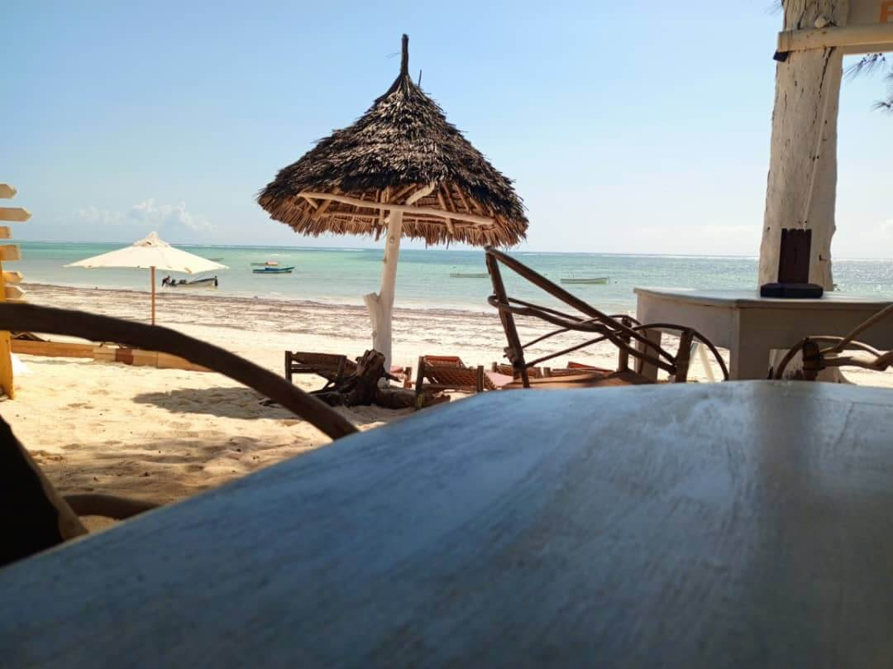
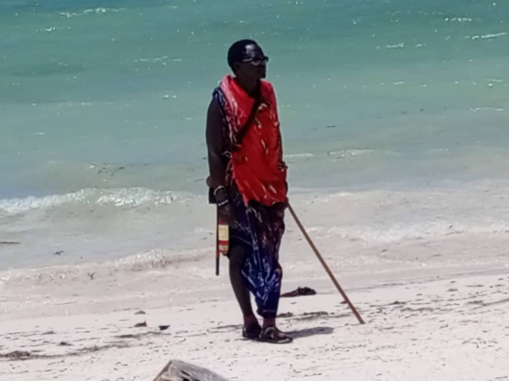
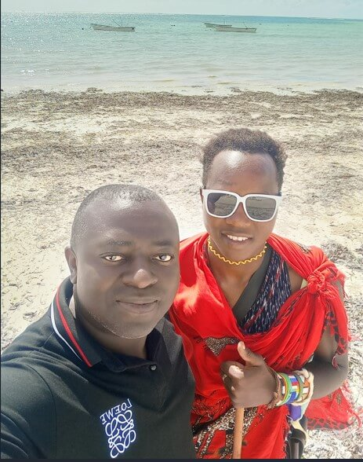

Je suis Serge FEUMATIO, Camerounais résidant en Côte d'Ivoire. Mon métier me permet de voyager à travers l’Afrique.
Je pense donc être bien placé pour faire des recommandations sur les lieux à visiter sur ce continent.
S’il existe une destination inoubliable que je devrais vous conseiller pour vos vacances, ce serait certainement la Tanzanie.
Dans les pages qui suivent, je vous invite à découvrir, à travers les photos que j’ai prises,
la richesse et la diversité de la Tanzanie lors de mes séjours dans ce pays.
Toutes les photos ont été réalisées par moi-même (à l’exception de la carte du monde qui situe la Tanzanie sur le globe).
Moi (Feumatio) dépuis le balcon de l'hotel Spice Tree by Turaco / Stone town le 28/08/2023(photo personnelle).
Un pays aux mille richesses
La Tanzanie est un pays d’Afrique de l’Est qui séduit les voyageurs par sa diversité.
Entre ses plages paradisiaques, ses villes animées et ses montagnes légendaires,
elle offre une expérience unique.
Dans ce site, je vous invite à découvrir trois lieux emblématiques :
Zanzibar, Dar es Salaam et le Kilimandjaro.
1- La Tanzanie
Située au cœur de l’Afrique de l’Est, la Tanzanie est un pays jeune et dynamique dont l’histoire contemporaine attire de plus en plus de voyageurs curieux. Née en 1964 de l’union du Tanganyika et de l’île de Zanzibar, elle incarne une rare stabilité politique dans la région, ayant su préserver la paix tout en affirmant une forte identité nationale. Sous la direction de figures emblématiques comme Julius Nyerere, la Tanzanie a misé sur l’unité, l’éducation et le développement durable. Aujourd’hui, cette nation en plein essor séduit par son énergie moderne, ses grandes villes en transformation comme Dar es Salaam, et son ouverture au monde, tout en restant profondément ancrée dans ses valeurs culturelles. Une destination où passé et présent cohabitent avec harmonie, prête à accueillir les visiteurs en quête d’authenticité et de renouveau.

Lien image / (https://gifex.com/fr/wp-content/uploads/1882/Carte-de-localisation-de-la-Tanzanie-768x768.png).

La plage de Kiwengwa (photo personnelle).

La plage de Kiwengwa (photo personnelle).
Les Maasaï sont un peuple semi-nomade vivant principalement dans le sud du Kenya et le nord de la Tanzanie, notamment autour des grandes plaines du Serengeti, du Ngorongoro et du Kilimandjaro. Ils sont réputés pour leur culture guerrière, leur mode de vie traditionnel et leurs vêtements rouges distinctifs (le shúkà), ainsi que pour leurs danses rituelles spectaculaires, comme le célèbre saut vertical (adumu).
Très attachés à leurs traditions, les Maasaï vivent en étroite relation avec la nature, dans des villages appelés "enkang", et élèvent principalement du bétail, qui occupe une place centrale dans leur économie et leur spiritualité. Malgré la modernisation, ils continuent de préserver leur langue (le maasai), leurs rituels et leur structure sociale très codifiée.
Ils suscitent beaucoup d’intérêt chez les voyageurs, et de nombreux circuits en Tanzanie intègrent des visites de villages Maasaï, bien que certaines soient touristiques ou scénarisées. Il est donc important de choisir des expériences respectueuses et authentiques, où les communautés sont réellement impliquées.

A la rencontre des Maasaï (photo personnelle).

Un Maasaï (en rouge) et moi (en noir) sur la plage de Kiwengwa le 10/09/2023 (photo personnelle).
2- Les sites touristiques
1. Bagamoyo : Ville historique côtière, ancien port d’esclaves et carrefour culturel important entre l’Afrique, le Moyen-Orient et l’Inde ; classée pour une future inscription au patrimoine mondial de l’UNESCO.
2. Kilimandjaro : Montagne mythique et emblème national, plus haut sommet d’Afrique (5 895 m), très prisée des randonneurs du monde entier.
3. Zanzibar : Archipel aux eaux turquoise et plages paradisiaques, avec Stone Town, ville historique classée UNESCO, et un mélange culturel africain, arabe et indien.
4. Parc national du Serengeti : L’un des plus célèbres parcs au monde, théâtre de la grande migration annuelle, avec une faune impressionnante et des safaris exceptionnels.
5. Cratère du Ngorongoro : Réserve naturelle unique inscrite au patrimoine mondial, célèbre pour sa concentration exceptionnelle d’animaux sauvages dans un cadre spectaculaire.
6. Parc national de Tarangire : Très apprécié pour ses paysages de savane parsemés de baobabs et ses grandes concentrations d’éléphants, surtout en saison sèche.
7. Parc national de Selous (Nyerere National Park) : L’une des plus grandes réserves protégées d’Afrique, idéale pour les safaris en bateau et les expériences hors des sentiers battus.
8. Parc national de Ruaha : Moins fréquenté que les parcs du nord, il offre un safari plus sauvage, avec une biodiversité impressionnante.
9. Plages de Nungwi et Kendwa (Zanzibar) : Côtes idylliques du nord de Zanzibar, réputées pour leur beauté, leur ambiance animée et leurs couchers de soleil spectaculaires.
10. Mont Meru : Alternative plus accessible au Kilimandjaro, avec des paysages de montagne époustouflants et une belle biodiversité.
11. Lac Natron : Site étrange et envoûtant, célèbre pour sa couleur rouge, son aspect surnaturel et ses colonies de flamants roses.
12. Parc national de Mikumi : Facilement accessible depuis Dar es Salaam, idéal pour une courte immersion safari.
13. Île de Mafia : Tranquille et authentique, prisée des plongeurs pour ses coraux préservés et ses requins-baleines.
14. Lac Victoria : Plus grand lac d’Afrique, offrant des excursions culturelles, de la pêche et des paysages paisibles.
15. Ville d’Arusha : Centre logistique pour les safaris dans le nord, dynamique et multiculturelle, avec un fort potentiel d'accueil touristique.